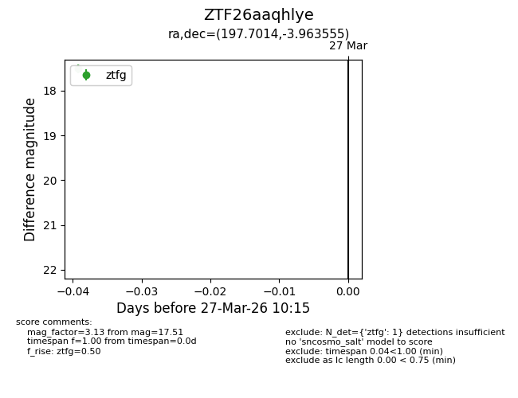
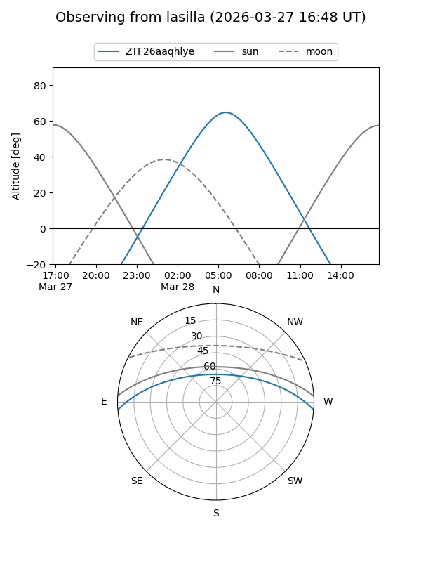
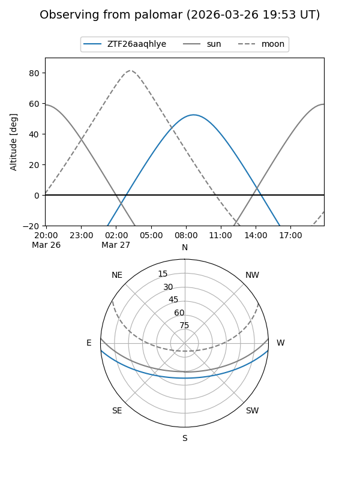

ZTF26aaqhlye
Target ZTF26aaqhlye at 2026-03-27 10:18
Aliases and brokers:
FINK: link
Lasair: link
ALeRCE: link
alt names
ZTF26aaqhlye (ztf,fink_ztf)
Coordinates:
equatorial (ra, dec) = 197.7014,-3.96356
equatorial (HMS+DMS) = 13:10:48.35,-03:57:48.80
galactic (l, b) = (312.2217,+58.55842)
Flags:
Photometry:
last ztfg=17.51
1 ztfg detections
Lightcurve

Visibility


Additional plots